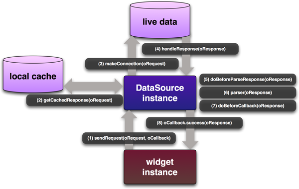

YUI 2: DataSource
YUI 2: DataSource
The DataSource Utility provides a common configurable interface for other components to fetch tabular data from a variety of local or remote sources, from simple JavaScript arrays to online database servers. It is a required dependency of the DataTable, Charts, and AutoComplete controls.
The DataSource will request data and then return the response to a callback function. It has the capability of going deep into the hierarchy of the source data, selecting specified fields from the raw output, parsing data as indicated and calling the provided callback function when finished.
The DataSource has an optional local cache to store retrieved and parsed data. It can also be set to periodically poll for data.
Note: As of the 2.6.0 release, DataSource has been refactored into a base class and subclasses. While backward compatibility has been maintained whenever possible, implementers who are upgrading from an earlier version are strongly advised to read the Upgrade Notes to smooth the transition.
On This Page:
- Upgrade Notes
- Getting Started
- Overview
- Instantiating a DataSource
- Setting
responseTypeandresponseSchema - Type Conversion
- Caching
- Polling
- Custom Events and "doBefore" Abstract Methods
- Using XHRDataSource
- Using ScriptNodeDataSource
- YUI on Mobile Devices
- Support & Community
- Filing Bugs and Feature Requests
Quick Links:
- Examples: Explore examples of the DataSource Utility in action.
- API Documentation: View the full API documentation for the DataSource Utility.
- Release Notes: Detailed change log for the DataSource Utility.
- License: The YUI Library is issued under a BSD license.
- Download: Download the DataSource Utility as part of the full YUI Library at YUILibrary.com.
Upgrade Notes
Users new to DataSource can skip this section and proceed directly to the Getting Started section. Implementers who are upgrading from previous versions of DataSource should note the following changes as of version 2.6.0:
- The DataSource class has been refactored into a DataSourceBase base class and the subclasses LocalDataSource, FunctionDataSource, XHRDataSource, and ScriptNodeDataSource. While backward compatibility of the YAHOO.util.DataSource constructor has been maintained, implementers should be aware that calling
new YAHOO.util.DataSource()now actually returns one of these subclasses. Implementers can alternatively call a subclass constructor directly. The DataSource constructor returns one of the subclasses based on the oLiveData passed to it, or the dataType config value. This class-based architecture no longer meaningfully supports swapping data types on the fly. - Parsing of totalRecords is no longer supported as a top-leval schema value. Implementers should access this data as a
metaFieldsvalue.
Getting Started
The DataSource code must be included before any control can use it:
<!-- Dependencies --> <script src="http://yui.yahooapis.com/2.9.0/build/yahoo/yahoo-min.js"></script> <script src="http://yui.yahooapis.com/2.9.0/build/event/event-min.js"></script> <!-- OPTIONAL: JSON Utility --> <script src="http://yui.yahooapis.com/2.9.0/build/json/json-min.js"></script> <!-- OPTIONAL: Connection (enables XHR) --> <script src="http://yui.yahooapis.com/2.9.0/build/connection/connection-min.js"></script> <!-- Source file --> <!-- OPTIONAL: Get (enables dynamic script nodes) --> <script src="http://yui.yahooapis.com/2.9.0/build/get/get-min.js"></script> <script src="http://yui.yahooapis.com/2.9.0/build/datasource/datasource-min.js"></script>

YUI Dependency Configurator:
Instead of copying and pasting the filepaths above, try letting the YUI dependency Configurator determine the optimal file list for your desired components; the Configurator uses YUI Loader to write out the full HTML for including the precise files you need for your implementation.
Note: If you wish to include this component via the YUI Loader, its module name is datasource. (Click here for the full list of module names for YUI Loader.)
Where these files come from: The files included using the text above will be served from Yahoo! servers. JavaScript files are minified, meaning that comments and white space have been removed to make them more efficient to download. To use the full, commented versions or the -debug versions of YUI JavaScript files, please download the library distribution and host the files on your own server.
Order matters: As is the case generally with JavaScript and CSS, order matters; these files should be included in the order specified above. If you include files in the wrong order, errors may result.
Overview
A DataSource is an abstract representation of a live set of data that presents a common predictable API for other objects to interact with. The nature of your data, its quantity, its complexity, and the logic for returning query results all play a role in determining your type of DataSource. For small amounts of simple textual data, a JavaScript array is a good choice. If your data has a small footprint but requires a simple computational or transformational filter before being displayed, a JavaScript function may be the right approach. For very large datasets — for example, a robust relational database — or to access a third-party webservice you'll certainly need to leverage the power of a Script Node or XHR DataSource. Whatever the source of your live data, the following diagram describes an overview of the DataSource API:

- A request for data is made to the DataSource by a widget instance. oRequest may define specific parameters, or it may simply be
null. ThesendRequestmethod requires two arguments:-
oRequest - For remote data, this request may be a param/value string, such as
"?id=123&name=foo". For local data, this request maybe a simpler value such as123. Specifying parameters may be irrelevent, so this value may be simply benull -
oCallback - An object literal with the following properties:
oCallback properties Property Type Description successFunction The function to call when the response is ready. failureFunction The function to call upon a response failure condition. scopeWidget instance The object to serve as the scope for the success and failure handlers. argumentObject Arbitrary data to be passed back to the success and failure handlers.
-
- The DataSource checks its local cache for a response to the
oRequest - Not finding a cached response will cause the DataSource to make a connection to the live data. Depending on the dataType, the connection may make a remote connection via Connection Manager or the Get Utility, or simply access local data in thread.
- A response from the live data set is returned to the DataSource in its raw state.
- The doBeforeParseData() abstract method allows implementers to access and transform the full response before it is schema-parsed.
- The DataSource parses the raw response according to responseType and implementer-defined schema.
- The doBeforeCallback() abstract method allows implementers to access and transform the parsed response before it is cached.
- The parsed data is returned to the callback with the following arguments:
-
oRequest - The same value that was passed in as the first argument to
sendRequest -
oParsedResponse - An object literal containing the following properties:
oParsedResponse properties Property Type Description tIdNumber Unique transaction ID number. resultsArray Schema-parsed data results. errorBoolean Indicates data error. cachedBoolean Indicates cached response. metaObject Schema-parsed meta data. -
oPayload - The same value as was passed in to the
argumentof theoCallbackobject literal
-
Instantiating a DataSource
To create a DataSource instance on your page, choose the appropriate DataSource class for the type of data you are using and pass in a reference to the data in the constructor. The simplest subclass available is LocalDataSource, which is meant to support data held in local memory (e.g., a JavaScript array, a JSON struct, a local XML document, a delimited string, or an HTML table element). When data is needs to be accessed from a server, you can instantiate either an XHRDataSource or a ScriptNodeDataSource. A FunctionDataSource allows you to define a function to return data in a highly customizeable manner. As a convenience, the YAHOO.util.DataSource constructor will return the appropriate subclass for you based on the type of live data you pass in. However, if you need a ScriptNodeDataSource, or a LocalDataSource pointing to delimited text, please note that you'll need to specify the dataType in the constructor explicitly.
// DataSources for all kinds of local data var dsLocalArray = new YAHOO.util.LocalDataSource(["apples", "broccoli", "cherries"]); var dsLocalJSON = new YAHOO.util.LocalDataSource({ found: 3, total: 20, results: [ {name: "apples", type:"fruit", color: "red"}, {name: "broccoli", type:"veg", color: "green"}, {name: "cherries", type:"fruit", color: "red"} ] }); var dsLocalTable = new YAHOO.util.LocalDataSource(YAHOO.util.Dom.get("myTable")); // DataSource for a server accessed over XHR var dsXHR = new YAHOO.util.XHRDataSource("http://local_path_or_path_to_proxy"); // DataSource for a remote location with dynamic script nodes var dsScriptNode = new YAHOO.util.ScriptNodeDataSource("http://path_to_webservice"); // DataSource for a JavaScript function that returns data var dsFunction = new YAHOO.util.FunctionDataSource(function() { return ["apples", "broccoli", "cherries"]; });
Setting responseType and responseSchema
DataSource uses the responseType value to determine which parsing algorithm to use, and the responseSchema values determine what data gets parsed out for use by the calling widget. Most DataSources can sniff the responseType value directly from the response, but in some cases you may have to explicitly set the appropriate responseType from the following static constants:
-
TYPE_JSARRAY -
TYPE_JSON -
TYPE_XML -
TYPE_TEXT -
TYPE_HTMLTABLE
var xmlDataSource = new YAHOO.util.XHRDataSource("http://myxmlwebservice"); xmlDataSource.responseType = YAHOO.util.XHRDataSource.TYPE_XML;
Defining a schema for your data allows DataSource to cache and return only the data your widgets will consume, thus minimizing the browser footprint and/or latency of your application. A responseSchema is an object literal of pointers that depend on your data's responseType:
Simple JavaScript Array
The simplest type of DataSource points to an array of strings, such that each result is a string.
| Property | Type | Description |
|---|---|---|
fields | Array | Array of strings to name the data fields represented by the data. Because DataSource assumes a tabular (two-dimensional) data structure, a simple array of strings is considered to contain only one field of data. |
Sample data
// A simple array of strings is only considered to contain one field of data ["apples", "broccoli", "cherries"]
Sample schema
myDataSource.responseSchema = { fields: ["name"] };
Complex JavaScript Array
A more common type of DataSource points to a complex array of nested arrays or JSON objects that represents a tabular (two-dimensional) data structure. Fields are used to assign a name to each field of data.
| Property | Type | Description |
|---|---|---|
fields | Array | Array of string names for each field of data coming in. For nested arrays, the array index of a field maps it directly to the array index of the result data. For nested objects, the order of the fields is irrelevant since the name of the field maps to result data, and data values that don't have a defined field are ignored. |
Sample data
// Nested arrays - field order matters and must be one-to-one to the data [ [ "apples", "fruit", "red" ], [ "broccoli", "vegetable", "green" ], [ "cherries","fruit", "red" ] ] myDataSource.responseType = YAHOO.util.XHRDataSource.TYPE_JSARRAY; myDataSource.responseSchema = { fields: [ "name", "type", "color" ] }; // Nested objects - field order doesn't matter and not all data is required to have a field [ { type: "fruit", color: "red", name: "apples" }, { name: "broccoli", color: "green", type: "vegetable" }, { color: "red", name: "cherries", type: "fruit" } ]
Sample schema
myDataSource.responseSchema = { fields: [ "name", "color" ] };
JSON
When a DataSource returns JSON data, fields point to the location of the results using dot-notation. Optionally, metaFields may be defined to access additional meta data. Location pointers to JSON data should be valid JavaScript identifiers, including dot notation or square bracket notation for array indices or quoted strings ("this.is[4]['valid identifier']", but "this-is.not valid"). For convenience, the leading dot can be omitted for dot notation location keys (".foo" is equivalent to "foo" is equivalent to "['foo']"). Use of dot notation is encouraged.
| Property | Type | Description |
|---|---|---|
resultsList | String | Dot-notation location to results. Not all data is required to have a field. |
fields | Array | String locator for each field of data coming in. |
metaFields | Object | (Optional) String locator of additional meta data. |
Sample data
{ "Response" : { "Results" : [ { "id":0, "obj": { "nested":"foo" }, "arr": [null, { "nested 2": 0 } ] }, { "id":1, "obj": { "nested":"bar" }, "arr": [null, { "nested 2": 3 } ] }, { "id":2, "obj": { "nested":"baz" }, "arr": [null, { "nested 2": null } ] }, //... ], "Total" : 1358, "Important" : { "to": { "me": "pot o' gold" } } }, "Session" : "12345678" }
Sample schema
myDataSource.responseSchema = { resultsList : "Response.Results", // String pointer to result data // Field order doesn't matter and not all data is required to have a field fields : [ { key: "id" }, // simple location { key: "obj.nested" }, // dot notation works { key: "['arr'][1]['nested 2']" } // bracket notation works ], metaFields : { // oParsedResponse.meta.totalRecords === 1358 totalRecords : "Response.Total", // oParsedResponse.meta.something === "pot o' gold" something : "Important.to.me" } };
XML
A schema for XML data requires a pointer to each result node, in additional to defining fields of data held in each node. Optionally, a metaNode and metaFields may be defined to access additional meta data. Location pointers to XML data can be valid XML node names, attribute names, or preferably, XPath syntax locators. Set the useXPath property to true for XPath support in your locators.
| Property | Type | Description |
|---|---|---|
resultNode | String | Name of the node assigned to each result. |
fields | Array | String locator for each field of data coming in. Not all data is required to have a field. |
metaNode | String | (Optional) String name of the node under which to search for meta data. |
metaFields | Object | (Optional) String locator of additional meta data. |
Sample data
<myroot rootatt='5'> <top>topvalue</top> <second nested='nestedsecond' /> <allitems> <livehere> <item type='foo'> <name type='nametype0'>Abc</name> <rank>0</rank> <subitem> <name type='subnametype0'>subABC</name> <age>10</age> </subitem> </item> <item type='bar'> <name type='nametype1'>Def</name> <rank>1</rank> <subitem> <name type='subnametype1'>subDEF</name> <age>11</age> </subitem> </item> </livehere> </allitems> </myroot>
Sample schema
myDataSource.useXPath = true; myDataSource.responseSchema = { metaFields: { rootatt: "/myroot/@rootatt", topnode: "//top", nestedatt: "//second/@nested" }, resultNode: "item", fields: [ { key: "type", locator: "@type" }, { key: "rank", parser: "number" }, "name", { key: "subnameatt", locator: "subitem/name/@type"} , { key: "age", locator: "subitem/age", parser: "number" } ] };
Delimited Text
When using this relatively simple type of data structure, we must make a small set of assumptions:
- There is a known and constant string delimiter of records.
- Within each record, there is a known and constant string delimiter of data fields that is not equal to the record delimiter.
- There are no escaped delimiter characters in the data
| Property | Type | Description |
|---|---|---|
recordDelim | String | Character(s) that delimits each record. |
fieldDelim | String | Character(s) that delimits each field within each record. |
Sample data
apples,fruit,red|broccoli,vegetable,green|cherriesfruit,red
Sample schema
myDataSource.responseSchema = { fieldDelim : ",", recordDelim : "|" };
HTML Table
DataSource supports consuming data out of an HTML table element. By default, DataSource will iterate over all TR elements of all TBODY elements of the given TABLE to parse out data. If there are any non-data elements (like summary rows or the message TBODY in DataTable), they should first be removed from the DOM.
| Property | Type | Description |
|---|---|---|
fields | Array | String name for each field of data coming in. The array index of a field maps it to the cellIndex of the result data. |
Sample data
<-- HTML tables - field order matters --> <table> <thead> <tr> <th>Name</th> <th>Type</th> <th>Color</th> </tr> </thead> <tbody> <tr> <td>Apples</td> <td>Fruit</td> <td>Red</td> </tr> <tr> <td>Broccoli</td> <td>Vegetable</td> <td>Green</td> </tr> <tr> <td>Cherries</td> <td>Fruit</td> <td>Red</td> </tr> </tbody> </table>
Sample schema
myDataSource.responseSchema = { fields: [ "name", "type", "color" ] };
Type Conversion
Data supplied by the DataSource may need to be type-converted before it can be consumed. This is especially true for XHRDataSources or progressive enhancement scenarios where data may be intended to be of type Number, but gets loaded as type String. Parser functions can be assigned to convert data on a per field basis.
Built-in parsers include parseDate which will handle any date that the native JavaScript Date.parse() method handles (notice not all date formats are supported) and parseNumber which will try to parse a number whether an integer or float. A custom function may also be defined by the implementer to override these built-in functions.
As of the 2.6.0 release, the following string shortcuts may be used to point to the built-in parser functions:
- "date" points to YAHOO.util.DataSource.parseDate
- "number" points to YAHOO.util.DataSource.parseNumber
- "string" points to YAHOO.util.DataSource.parseString
Sample data
{ "Inventory" : { "Produce" : [ { "name": "apples", type: "fruit", color: "red", quantity: "50" }, { "name": "broccoli", type: "fruit", color: "green", quantity: "35" }, { "name": "cherries", type: "fruit", color: "red", quantity: "100" }, ], "Total" : 20 } }
Sample schema
myDataSource.responseSchema = { resultsList : "Inventory.Produce", fields : [ "name", "type", // This field will convert incoming data using a custom function {key: "color", parser: myColorToRGB }, // This field will convert incoming data to type Number {key: "quantity", parser: "number" } ], metaFields : { // oParsedResponse.meta.totalRecords === 1358 totalRecords : "Response.Total", // oParsedResponse.meta.something === "pot o' gold" something : "Important.to.me" } };
Caching
The DataSource component can cache data in a local JavaScript array, which is especially helpful for reducing network traffic to remote servers. You can set the maxCacheEntries property to the number of responses you want held in the cache. When this number is exceeded, the oldest cached response will be dropped. The data in the cache is already fully processed, extracted, parsed and ready to be returned to the caller. On a cache hit, those events or overridable methods meant to signal a connection to the live data or handling of raw responses will not be fired or called.
myDataSource.maxCacheEntries = 4;
The cache will be updated when polling but won't be used for retrieval.
Cache entries are indexed by the oRequest (first) argument of sendRequest. There will be one entry per request up to the total of maxCachedEntries.
Polling
The setInterval method can be used to repeatedly poll for data. The first argument is the number of milliseconds to wait between requests, and the following three arguments are the same as those of sendRequest. This method returns a numeric identifier that can be used to cancel the polling.
Polling can be cancelled by calling clearInterval and passing it the identifier returned by the call to setInterval. All polling can be cancelled by calling clearAllIntervals. Please note that existing transactions will not be canceled.
Custom Events and "doBefore" Abstract Methods
DataSource offers several hooks can be used to monitor the progress of the data request/response cycle or perform transformations on the response along its journey back to the callback.
cacheRequestEvent- Fired when a request is made to the local cache.
cacheResponseEvent- Fired when data is retrieved from the local cache.
requestEvent- Fired when a request is sent to the live data source.
responseEvent- Fired when live data source sends response.
doBeforeParseData- This overridable abstract method gives implementers an opportunity to munge the data before it is schema-parsed. Implementers should be sure to return data in a ready-to-parse state to avoid errors.
responseParseEvent- Fired when response is parsed.
dataErrorEvent- Fired when a data error is encountered.
doBeforeCallback- This overridable abstract method gives implementers an opportunity to access the data before it has been cached or returned to the callback. Implementers should be sure to return data in a ready-to-return state to avoid errors.
Using XHRDataSource
The XHRDataSource class uses the YUI Connection Manager to retrieve data from a server. Implementers should be aware of browser security restrictions that prevent XHR connections across domaina. The following properties are available for configuration:
| Property | Type | Default | Description |
|---|---|---|---|
connMethodPost | Boolean | false | True if data is to be sent via POST. By default, data will be sent via GET. |
connMgr | Class | YAHOO.util.Connect | Alias to YUI Connection Manager, to allow implementers to use a custom class. |
connTimeout | Number | 0 | How many milliseconds the XHR connection will wait for a server response. Any non-zero value will enable the Connection Manager's Auto-Abort feature. |
connXhrMode | String | "allowAll" | Defines request/response management in the following manner:
|
Special considerations need to be made when using a DataSource that supports asynchronous request/response cycles, including state validation in the sendRequest() callback's success and failure handlers. In the case of YUI widgets consuming DataSource, these handlers will want to verify that the widget instances themselves are still valid.
Using ScriptNodeDataSource
The ScriptNodeDataSource class uses the YUI Get Utility to retrieve data from a remote server without the need for a proxy. Note: ScriptNodeDataSource requires that the webservice facilitate a callback mechanism in its response. The following properties are available for configuration:
| Property | Type | Default | Description |
|---|---|---|---|
asyncMode | String | "allowAll" | Defines request/response management in the following manner:
|
getUtility | Class | Alias to YUI Get Utility, to allow implementers to use a custom class. | |
scriptCallbackParam | String | "callback" | Callback string parameter name sent to the remote script. By default, requests are sent to <URI>?<scriptCallbackParam>=callbackFunction |
Special considerations need to be made when using a DataSource that supports asynchronous request/response cycles, including state validation in the sendRequest() callback's success and failure handlers. In the case of YUI widgets consuming DataSource, these handlers will want to verify that the widget instances themselves are still valid.
YUI on Mobile: Using DataSource Utility with "A-Grade" Mobile Browsers
About this Section: YUI generally works well with mobile browsers that are based on A-Grade browser foundations. For example, Nokia's N-series phones, including the N95, use a browser based on Webkit — the same foundation shared by Apple's Safari browser, which is found on the iPhone. The fundamental challenges in developing for this emerging class of full, A-Grade-derived browsers on handheld devices are:
- Screen size: You have a much smaller canvas;
- Input devices: Mobile devices generally do not have mouse input, and therefore are missing some or all mouse events (like mouseover);
- Processor power: Mobile devices have slower processors that can more easily be saturated by JavaScript and DOM interactions — and processor usage affects things like battery life in ways that don't have analogues in desktop browsers;
- Latency: Most mobile devices have a much higher latency on the network than do terrestrially networked PCs; this can make pages with many script, css or other types of external files load much more slowly.
There are other considerations, many of them device/browser specific (for example, current versions of the iPhone's Safari browser do not support Flash). The goal of these sections on YUI User's Guides is to provide you some preliminary insights about how specific components perform on this emerging class of mobile devices. Although we have not done exhaustive testing, and although these browsers are revving quickly and present a moving target, our goal is to provide some early, provisional advice to help you get started as you contemplate how your YUI-based application will render in the mobile world.
More Information:
- Challenges of Interface Design for Mobile Devices - YUI Blog article by Lucas Pettinati, Yahoo! Sr. Interaction Designer.
- Performance Research, Part 5: iPhone Cacheability - Making it Stick - YUI Blog article by Tenni Theurer and Wayne Shea from the Yahoo! Exceptional Performance Team
The core functionality of the DataSource utility operates without any major issues on high-end mobile platforms, keeping in mind the following preliminary list of smart phone known issues:
- XML is not currently supported on Android devices.
Support & Community
The YUI Library and related topics are discussed on the on the YUILibrary.com forums.
Also be sure to check out YUIBlog for updates and articles about the YUI Library written by the library's developers.
Filing Bugs & Feature Requests
The YUI Library's public bug tracking and feature request repositories are located on the YUILibrary.com site. Before filing new feature requests or bug reports, please review our reporting guidelines.

DataSource Utility Examples:
Other YUI Examples That Make Use of the DataSource Utility:
- Basic Local Data (included with examples for the AutoComplete Control)
- Basic Remote Data (included with examples for the AutoComplete Control)
- Custom Formatting, with a Proxyless Remote DataSource (included with examples for the AutoComplete Control)
- Customizing Remote Requests (included with examples for the AutoComplete Control)
- Datatable with Autocomplete (included with examples for the DataTable Control)
- Find Photos on Flickr (included with examples for the AutoComplete Control)
- FunctionDataSource to Search Multiple Fields of an Address Book at Runtime (included with examples for the AutoComplete Control)
- Inline Cell Editing (included with examples for the DataTable Control)
- Integrating Browser History Manager with Server-side Pagination and Sorting (included with examples for the DataTable Control)
- JSON Data Over XHR (included with examples for the DataTable Control)
- Polling the DataSource (included with examples for the DataTable Control)
- Progressive Enhancement (included with examples for the DataTable Control)
- Screenreader Accessibility (included with examples for the AutoComplete Control)
- Server-side Pagination and Sorting for Dynamic Data (included with examples for the DataTable Control)
- Textual Data Over XHR (included with examples for the DataTable Control)
- XML Data Over XHR With POST (included with examples for the DataTable Control)
- XML Data with XPath (included with examples for the DataTable Control)
YUI DataSource on del.icio.us:
All YUI 2.x users should review the YUI 2.8.2 security bulletin, which discusses a vulnerability present in YUI 2.4.0-2.8.1.
- YUI Library
- YUI Home
- YUI 3
- YUIBlog
- Bug Reports/Feature Requests
- YUI on GitHub
- YUI License
- YUI 2.x Resources
- YUI 2 Archives
- YUI 2 Examples
- YUI 2 API Docs
- YUI 2 Discussion Forums

- YUI Components
- Animation
- AutoComplete
- Browser History Manager
- Button
- Calendar
- Carousel
- Charts
- Color Picker
- Connection Manager
- Container
- Cookie
- DataSource
- DataTable
- Dom
- Drag & Drop
- Element
- Event
- Get
- ImageCropper
- ImageLoader
- JSON
- Layout Manager
- Logger
- Menu
- Paginator
- Profiler
- ProfilerViewer
- ProgressBar
- Resize
- Rich Text Editor
- Selector
- Slider
- Storage
- StyleSheet
- SWF
- SWFStore
- TabView
- TreeView
- Uploader
- Yahoo Global Object
- YUI Loader
- YUI Test
- Reset CSS
- Base CSS
- Fonts CSS
- Grids CSS
Copyright © 2013 Yahoo! Inc. All rights reserved.